Estatísticas do Servidor Web de mundosdemirr.com
Estatísticas do Servidor Web de mundosdemirr.com
Começo do programa em Qua-31-Jan-2007 08:50.
Análise de requisições desde Qui-23-Nov-2006 21:12 até Qua-31-Jan-2007 08:28 (68,47 dias).
Estatísticas do Servidor Web de mundosdemirr.comComeço do programa em Qua-31-Jan-2007 08:50.
Análise de requisições desde Qui-23-Nov-2006 21:12 até Qua-31-Jan-2007 08:28 (68,47 dias).
(Ir a: Início | Sumário Geral | Relatório Mensal | Resumo Diário | Resumo Horário | Relatório de Domínios | Relatório de organizações | Relatório de referência redirecionada | Relatório de referência falhada | Relatório do site de referência | Relatório de Browsers | Resumo de Browsers | Relatório de Sistemas Operacionais | Relatório de Códigos de Estado | Relatório de Tamanho de Arquivo | Relatório de Tipos de Arquivo | Relatório de Diretórios | Relatório de Requisições)
Os valores entre parêntesis referem-se aos 7 dias até 31-Jan-2007 08:50.
Requisições atendidas: 316.751 (19.504)
Número médio de requisições atendidas por dia: 4.626 (2.786)
Pedidos de páginas atendidas: 10.847 (813)
Número médio de requisições de páginas atendidas por dia: 158 (116)
Requisições que falharam: 8.229 (159)
Requisições redirecionadas: 2.194 (9)
Arquivos diferentes solicitados: 476 (252)
Máquinas diferentes atendidas: 674 (227)
Tráfego total: 1,73 gigabytes (139,31 megabytes)
Tráfego médio transferido por dia: 25,81 megabytes (19,90 megabytes)
(Ir a: Início | Sumário Geral | Relatório Mensal | Resumo Diário | Resumo Horário | Relatório de Domínios | Relatório de organizações | Relatório de referência redirecionada | Relatório de referência falhada | Relatório do site de referência | Relatório de Browsers | Resumo de Browsers | Relatório de Sistemas Operacionais | Relatório de Códigos de Estado | Relatório de Tamanho de Arquivo | Relatório de Tipos de Arquivo | Relatório de Diretórios | Relatório de Requisições)
Cada unidade ( ) representa 300 requisições de páginas ou fração.
) representa 300 requisições de páginas ou fração.
| mês | N.req | Pags. | |
|---|---|---|---|
| Nov 2006 | 3310 | 62 | |
| Dez 2006 | 20594 | 333 |  |
| Jan 2007 | 292847 | 10452 |  |
Mês mais movimentado: Jan 2007 (10.452 requisições de páginas).
(Ir a: Início | Sumário Geral | Relatório Mensal | Resumo Diário | Resumo Horário | Relatório de Domínios | Relatório de organizações | Relatório de referência redirecionada | Relatório de referência falhada | Relatório do site de referência | Relatório de Browsers | Resumo de Browsers | Relatório de Sistemas Operacionais | Relatório de Códigos de Estado | Relatório de Tamanho de Arquivo | Relatório de Tipos de Arquivo | Relatório de Diretórios | Relatório de Requisições)
Cada unidade () representa 60 requisições de páginas ou fração.
| dia | N.req | Pags. | |
|---|---|---|---|
| Dom | 17033 | 765 |   |
| Seg | 48997 | 1400 |  |
| Ter | 62470 | 2592 | |
| Qua | 75010 | 2585 | |
| Qui | 40624 | 1696 | |
| Sex | 19006 | 819 | |
| Sab | 53611 | 990 | |
(Ir a: Início | Sumário Geral | Relatório Mensal | Resumo Diário | Resumo Horário | Relatório de Domínios | Relatório de organizações | Relatório de referência redirecionada | Relatório de referência falhada | Relatório do site de referência | Relatório de Browsers | Resumo de Browsers | Relatório de Sistemas Operacionais | Relatório de Códigos de Estado | Relatório de Tamanho de Arquivo | Relatório de Tipos de Arquivo | Relatório de Diretórios | Relatório de Requisições)
Cada unidade () representa 20 requisições de páginas ou fração.
| h | N.req | Pags. | |
|---|---|---|---|
| 0 | 13999 | 622 | |
| 1 | 11397 | 523 | |
| 2 | 3688 | 121 | |
| 3 | 6155 | 283 | |
| 4 | 1707 | 102 | |
| 5 | 1598 | 48 | |
| 6 | 1267 | 45 | |
| 7 | 2345 | 108 | |
| 8 | 2001 | 79 | |
| 9 | 9401 | 393 | |
| 10 | 27313 | 865 | |
| 11 | 29329 | 920 | |
| 12 | 13627 | 514 | |
| 13 | 9746 | 312 | |
| 14 | 18976 | 824 | |
| 15 | 8307 | 417 | |
| 16 | 11703 | 486 | |
| 17 | 11395 | 499 | |
| 18 | 27736 | 680 | |
| 19 | 25550 | 645 | |
| 20 | 18226 | 448 | |
| 21 | 13707 | 524 | |
| 22 | 21975 | 676 | |
| 23 | 25603 | 713 | |
(Ir a: Início | Sumário Geral | Relatório Mensal | Resumo Diário | Resumo Horário | Relatório de Domínios | Relatório de organizações | Relatório de referência redirecionada | Relatório de referência falhada | Relatório do site de referência | Relatório de Browsers | Resumo de Browsers | Relatório de Sistemas Operacionais | Relatório de Códigos de Estado | Relatório de Tamanho de Arquivo | Relatório de Tipos de Arquivo | Relatório de Diretórios | Relatório de Requisições)
Mostrando os domínios, ordenados por quantidade de tráfego.
| N.req | %bytes | domínio |
|---|---|---|
| 316751 | 100% | [endereço IP não resolvido] |
(Ir a: Início | Sumário Geral | Relatório Mensal | Resumo Diário | Resumo Horário | Relatório de Domínios | Relatório de organizações | Relatório de referência redirecionada | Relatório de referência falhada | Relatório do site de referência | Relatório de Browsers | Resumo de Browsers | Relatório de Sistemas Operacionais | Relatório de Códigos de Estado | Relatório de Tamanho de Arquivo | Relatório de Tipos de Arquivo | Relatório de Diretórios | Relatório de Requisições)
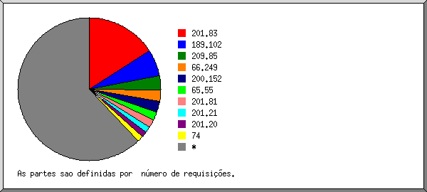
Mostrando as 20 primeiras organizações por número de requisições, ordenadas por número de requisições.
| N.req | %bytes | organização |
|---|---|---|
| 48462 | 4,68% | 201.83 |
| 34742 | 12,67% | 201.81 |
| 22001 | 3,00% | 201.43 |
| 21036 | 3,09% | 200.152 |
| 9364 | 1,88% | 201.27 |
| 7703 | 1,20% | 201.92 |
| 5210 | 2,50% | 201.9 |
| 4943 | 2,18% | 66.249 |
| 4636 | 1,51% | 200.102 |
| 4628 | 2,16% | 201.58 |
| 4460 | 1,63% | 201.26 |
| 4450 | 1,93% | 201.13 |
| 4264 | 1,92% | 201.1 |
| 4142 | 2,13% | 207.44 |
| 4131 | 1,71% | 200.158 |
| 3981 | 1,41% | 201.68 |
| 3787 | 1,76% | 201.79 |
| 3779 | 1,10% | 189.13 |
| 3701 | 1,31% | 201.51 |
| 3171 | 1,40% | 201.42 |
| 114160 | 48,80% | [não listadas: 166 organizações] |
(Ir a: Início | Sumário Geral | Relatório Mensal | Resumo Diário | Resumo Horário | Relatório de Domínios | Relatório de organizações | Relatório de referência redirecionada | Relatório de referência falhada | Relatório do site de referência | Relatório de Browsers | Resumo de Browsers | Relatório de Sistemas Operacionais | Relatório de Códigos de Estado | Relatório de Tamanho de Arquivo | Relatório de Tipos de Arquivo | Relatório de Diretórios | Relatório de Requisições)
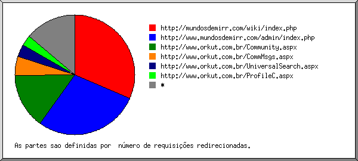
Mostrando os URLs de referência, ordenados por número de requisições redirecionadas.
| N.req | URL |
|---|---|
| 1038 | http://www.mundosdemirr.com/admin/index.php |
| 71 | http://www.mundosdemirr.com/admin/index.php?m=posts&id= |
| 52 | http://www.mundosdemirr.com/admin/index.php?m=posts |
| 36 | http://www.mundosdemirr.com/admin/index.php?m=novo_post |
| 30 | http://www.mundosdemirr.com/admin/index.php?m=posts&id=65 |
| 29 | http://www.mundosdemirr.com/admin/index.php?m=posts&edit=67 |
| 22 | http://www.mundosdemirr.com/admin/index.php?m=posts&id=63&aprovar=1 |
| 19 | http://www.mundosdemirr.com/admin/index.php?m=posts&id=63 |
| 14 | http://www.mundosdemirr.com/admin/index.php?m=noticias |
| 14 | http://www.mundosdemirr.com/admin/index.php?m=posts&id=3 |
| 87 | http://www.mundosdemirr.com/novo/admin/index.php |
| 22 | http://www.mundosdemirr.com/novo/admin/index.php?m=posts |
| 10 | http://www.mundosdemirr.com/novo/admin/index.php?m=posts&id=3 |
| 44 | http://br.f306.mail.yahoo.com/dc/launch |
| 28 | http://br.f306.mail.yahoo.com/dc/launch?.rand=9ol7ejn9rhli1 |
| 16 | http://br.f306.mail.yahoo.com/dc/launch?.rand=f6gujbo0m99t4 |
| 39 | http://www.mundosdemirr.com/novo/admin/ |
| 21 | http://br.f306.mail.yahoo.com/ym/ShowLetter |
| 11 | http://br.f306.mail.yahoo.com/ym/ShowLetter?MsgId=6512_4359864_527_2261_1891_0_53253_4388_3148307978&Idx=10&YY=42311&y5beta=yes&y5beta=yes&inc=25&order=up&sort=date&pos=0&view=&head=&box=Arquivo |
| 10 | http://br.f306.mail.yahoo.com/ym/ShowLetter?MsgId=6512_4359864_527_2261_1891_0_53253_4388_3148307978&Idx=10&YY=50835&y5beta=yes&y5beta=yes&inc=25&order=up&sort=date&pos=0&view=&head=&box=Arquivo |
| 16 | http://mundosdemirr.com/admin/index.php |
(Ir a: Início | Sumário Geral | Relatório Mensal | Resumo Diário | Resumo Horário | Relatório de Domínios | Relatório de organizações | Relatório de referência redirecionada | Relatório de referência falhada | Relatório do site de referência | Relatório de Browsers | Resumo de Browsers | Relatório de Sistemas Operacionais | Relatório de Códigos de Estado | Relatório de Tamanho de Arquivo | Relatório de Tipos de Arquivo | Relatório de Diretórios | Relatório de Requisições)
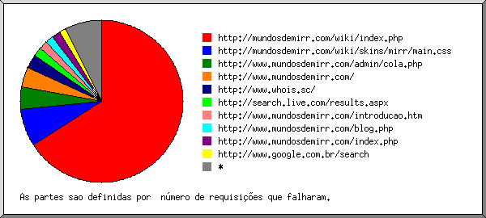
Mostrando os URLs de referência, ordenados por número de requisições que falharam.
| N.req | URL |
|---|---|
| 1195 | http://www.mundosdemirr.com/admin/cola.php |
| 375 | http://www.mundosdemirr.com/admin/cola.php?PHPSESSID=634f69fb09faf20be73e30799a5698ee |
| 32 | http://www.mundosdemirr.com/admin/cola.php?PHPSESSID=e74e22fb41db464047149e5a40c1aebd |
| 25 | http://www.mundosdemirr.com/admin/cola.php?PHPSESSID=b12c026c20a6a847f1d9cc3cde4ede5d |
| 15 | http://www.mundosdemirr.com/admin/cola.php?PHPSESSID=714df7a54a29546000b4161648b40e75 |
| 130 | http://www.whois.sc/ |
| 125 | http://www.mundosdemirr.com/index.php |
| 25 | http://www.mundosdemirr.com/index.php?pg=t2g |
| 25 | http://www.mundosdemirr.com/index.php?pg=o_autor |
| 85 | http://www.mundosdemirr.com/ |
| 42 | http://www.mundosdemirr.com/novo/index.php |
| 33 | http://www.mundosdemirr.com/novo/index.php?pg=o_autor |
| 25 | http://www.mundosdemirr.com/tentando_superar_o_desanimo |
| 25 | http://www.mundosdemirr.com/piratas_a_deriva |
| 21 | http://www.mundosdemirr.com/o_genio_dos_livros |
| 19 | http://www.mundosdemirr.com/novo/admin/index.php |
| 10 | http://www.mundosdemirr.com/novo/admin/index.php?m=posts&id=3&aprovar=2 |
| 15 | http://www.mundosdemirr.com/comentarios.php |
| 15 | http://www.mundosdemirr.com/comentarios.php?id=64 |
| 14 | http://www.mundosdemirr.com/tentar_um_recomeco |
(Ir a: Início | Sumário Geral | Relatório Mensal | Resumo Diário | Resumo Horário | Relatório de Domínios | Relatório de organizações | Relatório de referência redirecionada | Relatório de referência falhada | Relatório do site de referência | Relatório de Browsers | Resumo de Browsers | Relatório de Sistemas Operacionais | Relatório de Códigos de Estado | Relatório de Tamanho de Arquivo | Relatório de Tipos de Arquivo | Relatório de Diretórios | Relatório de Requisições)
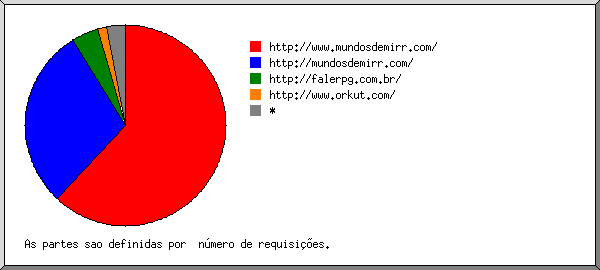
Mostrando os sites de referência, ordenados por número de requisições.
| N.req | site |
|---|---|
| 287345 | http://www.mundosdemirr.com/ |
| 5468 | http://www.orkut.com/ |
| 1201 | http://mundosdemirr.com/ |
| 554 | http://www.mundosdemirr.blogspot.com/ |
| 341 | http://br.f306.mail.yahoo.com/ |
| 130 | http://www.whois.sc/ |
| 110 | http://www.google.com.br/ |
| 87 | http://mail.google.com/ |
| 84 | http://mundosdemirr.blogspot.com/ |
| 52 | http://groups.google.com/ |
| 25 | http://www.google.com/ |
| 22 | http://br.f342.mail.yahoo.com/ |
| 22 | http://br.f519.mail.yahoo.com/ |
| 22 | http://br.f569.mail.yahoo.com/ |
| 22 | http://uk.f373.mail.yahoo.com/ |
| 22 | http://www.coca-cola.com.br/ |
| 21 | http://br.f343.mail.yahoo.com/ |
| 20 | http://br.groups.yahoo.com/ |
| 12 | http://www.google.pt/ |
| 9 | http://br.f302.mail.yahoo.com/ |
| 8 | http://br.f534.mail.yahoo.com/ |
| 5 | http://www.sitemeter.com/ |
| 3 | http://www.google.it/ |
| 2 | http://www.somnoblog.com/ |
| 2 | http://br.f398.mail.yahoo.com/ |
| 1 | http://br.f319.mail.yahoo.com/ |
| 1 | http://www.google.com.ar/ |
(Ir a: Início | Sumário Geral | Relatório Mensal | Resumo Diário | Resumo Horário | Relatório de Domínios | Relatório de organizações | Relatório de referência redirecionada | Relatório de referência falhada | Relatório do site de referência | Relatório de Browsers | Resumo de Browsers | Relatório de Sistemas Operacionais | Relatório de Códigos de Estado | Relatório de Tamanho de Arquivo | Relatório de Tipos de Arquivo | Relatório de Diretórios | Relatório de Requisições)
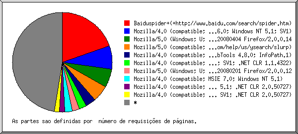
Mostrando os 40 primeiros browsers por número de requisições de páginas, ordenados por número de requisições de páginas.
| N.req | Pags. | Browser |
|---|---|---|
| 104898 | 2078 | Mozilla/4.0 (compatible; MSIE 6.0; Windows NT 5.1; SV1) |
| 41151 | 1823 | Mozilla/5.0 (Windows; U; Windows NT 5.1; pt-BR; rv:1.8.1.1) Gecko/20061204 Firefox/2.0.0.1 |
| 27676 | 1078 | Mozilla/5.0 (Windows; U; Windows NT 5.1; en-US; rv:1.8.0.9) Gecko/20061206 Firefox/1.5.0.9 |
| 14143 | 715 | Mozilla/5.0 (Windows; U; Windows NT 5.1; pt-BR; rv:1.8.0.9) Gecko/20061206 Firefox/1.5.0.9 |
| 19519 | 688 | Mozilla/4.0 (compatible; MSIE 6.0; Windows NT 5.1; SV1; .NET CLR 1.1.4322) |
| 4647 | 204 | Mozilla/4.0 (compatible; MSIE 7.0; Windows NT 5.1) |
| 3788 | 183 | Mozilla/4.0 (compatible; MSIE 6.0; Windows NT 5.1; SV1; MEGAUPLOAD 1.0) |
| 5494 | 174 | Mozilla/4.0 (compatible; MSIE 6.0; Windows NT 5.1; SV1; .NET CLR 2.0.50727) |
| 2382 | 168 | Mozilla/4.0 (compatible; MSIE 6.0; Windows 98) |
| 4052 | 158 | Mozilla/4.0 (compatible; MSIE 7.0; Windows NT 5.1; .NET CLR 1.1.4322) |
| 2976 | 145 | Mozilla/4.0 (compatible; MSIE 7.0; Windows NT 5.1; .NET CLR 1.1.4322; .NET CLR 2.0.50727) |
| 130 | 130 | SurveyBot/2.3 (Whois Source) |
| 160 | 110 | Mozilla/5.0 (compatible; Yahoo! Slurp; http://help.yahoo.com/help/us/ysearch/slurp) |
| 4783 | 108 | Mozilla/5.0 (compatible; Googlebot/2.1; +http://www.google.com/bot.html) |
| 2482 | 104 | Mozilla/4.0 (compatible; MSIE 6.0; Windows NT 5.1; SV1; Alexa Toolbar) |
| 1960 | 100 | Mozilla/4.0 (compatible; MSIE 6.0; Windows NT 5.1) |
| 2668 | 85 | Mozilla/4.0 (compatible; MSIE 6.0; Windows NT 5.1; SV1; www.k2pdf.com; .NET CLR 1.1.4322) |
| 904 | 85 | Mozilla/5.0 (Windows; U; Windows NT 5.0; pt-BR; rv:1.8.1.1) Gecko/20061204 Firefox/2.0.0.1 |
| 3777 | 84 | Mozilla/4.0 (compatible; MSIE 6.0; Windows NT 5.1; SV1; FDM) |
| 1639 | 71 | Mozilla/4.0 (compatible; MSIE 6.0; Windows NT 5.1; SV1; .NET CLR 2.0.50727; .NET CLR 1.1.4322) |
| 1140 | 68 | Mozilla/4.0 (compatible; MSIE 6.0; Windows NT 5.1; SV1; InfoPath.2; .NET CLR 1.1.4322) |
| 1774 | 68 | Mozilla/4.0 (compatible; MSIE 6.0; Windows NT 5.1; SV1; .NET CLR 1.1.4322; MEGAUPLOAD 1.0) |
| 1360 | 64 | ia_archiver |
| 1315 | 62 | Mozilla/4.0 (compatible; MSIE 6.0; Windows NT 5.1; SV1; InfoPath.1) |
| 1481 | 62 | Mozilla/4.0 (compatible; MSIE 6.0; Windows NT 5.1; SV1; .NET CLR 1.1.4322; Alexa Toolbar) |
| 1535 | 61 | Mozilla/4.0 (compatible; MSIE 6.0; Windows NT 5.1; .NET CLR 1.1.4322) |
| 2524 | 60 | Mozilla/5.0 (Windows; U; Windows NT 5.1; pt-BR; rv:1.8.1) Gecko/20061010 Firefox/2.0 |
| 9309 | 55 | Mozilla/4.0 (compatible; MSIE 6.0; Windows NT 5.1; SV1; EmbeddedWB 14,52 from: http://www.bsalsa.com/ EmbeddedWB 14,52; .NET CLR 2.0.50727) |
| 617 | 45 | Mozilla/4.0 (compatible; MSIE 6.0; Windows NT 5.1; FunWebProducts) |
| 572 | 44 | Mozilla/5.0 (Windows; U; WinNT4.0; pt-BR; rv:1.8.1.1) Gecko/20061204 Firefox/2.0.0.1 |
| 660 | 44 | Mozilla/5.0 (Windows; U; Windows NT 5.1; en-US; rv:1.7.12) Gecko/20050915 Firefox/1.0.7 |
| 634 | 43 | Mozilla/4.0 (compatible; MSIE 5.0; Windows 98; DigExt) |
| 968 | 43 | Mozilla/4.0 (compatible; MSIE 5.5; Windows 98; Win 9x 4.90; dial) |
| 504 | 42 | Mozilla/5.0 (Windows; U; Windows NT 5.1; pt-BR; rv:1.8.0.8) Gecko/20061025 Firefox/1.5.0.9 |
| 656 | 41 | Mozilla/4.0 (compatible; MSIE 6.0; Windows NT 5.1; SV1; .NET CLR 1.1.4322; InfoPath.1) |
| 40 | 40 | Mozilla/5.0 (X11; U; Linux i686; en-US; rv:1.7.5) Gecko/20041107 Firefox/1.0 |
| 877 | 39 | Mozilla/4.0 (compatible; MSIE 6.0; Windows 98; .NET CLR 1.1.4322) |
| 777 | 37 | Mozilla/4.0 (compatible; MSIE 6.0; Windows NT 5.1; SV1; .NET CLR 1.1.4322; .NET CLR 2.0.50727) |
| 34 | 34 | panscient.com |
| 858 | 34 | Mozilla/5.0 (Windows; U; Windows NT 5.1; pt-BR; rv:1.8.0.7) Gecko/20060909 Firefox/1.5.0.7 |
| 35707 | 1539 | [não listados: 119 Browsers] |
(Ir a: Início | Sumário Geral | Relatório Mensal | Resumo Diário | Resumo Horário | Relatório de Domínios | Relatório de organizações | Relatório de referência redirecionada | Relatório de referência falhada | Relatório do site de referência | Relatório de Browsers | Resumo de Browsers | Relatório de Sistemas Operacionais | Relatório de Códigos de Estado | Relatório de Tamanho de Arquivo | Relatório de Tipos de Arquivo | Relatório de Diretórios | Relatório de Requisições)
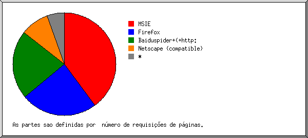
Mostrando os browsers com pelo menos 1 requisição de uma página, ordenados por número de requisições de páginas.
| no. | N.req | Pags. | Browser |
|---|---|---|---|
| 1 | 204846 | 5808 | MSIE |
| 2 | 98313 | 4404 | Firefox |
| 3 | 4950 | 225 | Netscape (compatible) |
| 4 | 130 | 130 | SurveyBot |
| 5 | 1360 | 64 | ia_archiver |
| 6 | 1332 | 47 | Safari |
| 7 | 883 | 41 | Mozilla |
| 8 | 34 | 34 | panscient.com |
| 9 | 26 | 26 | bot |
| 10 | 392 | 14 | Opera |
| 11 | 12 | 12 | Snapbot |
| 12 | 243 | 9 | Galeon |
| 13 | 2 | 2 | Microsoft Data Access Internet Publishing Provider Cache Manager |
| 48 | 0 | [não listados: 2 Browsers] |
(Ir a: Início | Sumário Geral | Relatório Mensal | Resumo Diário | Resumo Horário | Relatório de Domínios | Relatório de organizações | Relatório de referência redirecionada | Relatório de referência falhada | Relatório do site de referência | Relatório de Browsers | Resumo de Browsers | Relatório de Sistemas Operacionais | Relatório de Códigos de Estado | Relatório de Tamanho de Arquivo | Relatório de Tipos de Arquivo | Relatório de Diretórios | Relatório de Requisições)
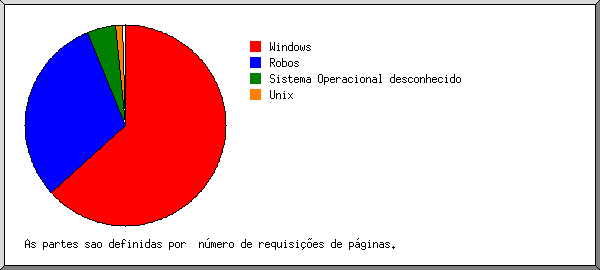
Mostrando os Sistemas Operacionais, ordenados por número de requisições de páginas.
| no. | N.req | Pags. | Sistema Operacional |
|---|---|---|---|
| 1 | 302392 | 10109 | Windows |
| 287009 | 9373 | Windows XP | |
| 6413 | 343 | Windows 98 | |
| 4431 | 193 | Windows 2000 | |
| 2694 | 111 | Windows ME | |
| 572 | 44 | Windows NT | |
| 643 | 30 | Windows desconhecido | |
| 630 | 15 | Windows Server 2003 | |
| 2 | 6562 | 493 | Sistema Operacional desconhecido |
| 3 | 2219 | 164 | Unix |
| 2219 | 164 | Linux | |
| 4 | 1398 | 50 | Macintosh |
(Ir a: Início | Sumário Geral | Relatório Mensal | Resumo Diário | Resumo Horário | Relatório de Domínios | Relatório de organizações | Relatório de referência redirecionada | Relatório de referência falhada | Relatório do site de referência | Relatório de Browsers | Resumo de Browsers | Relatório de Sistemas Operacionais | Relatório de Códigos de Estado | Relatório de Tamanho de Arquivo | Relatório de Tipos de Arquivo | Relatório de Diretórios | Relatório de Requisições)
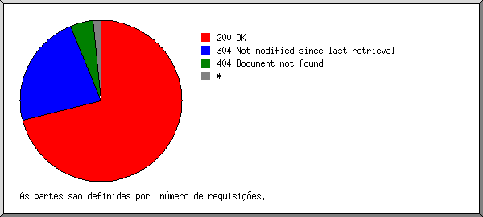
Mostrando os códigos de estado, por ordem numérica.
| N.req | cod. estado |
|---|---|
| 224689 | 200 OK |
| 442 | 206 Partial content |
| 85 | 301 Document moved permanently |
| 2109 | 302 Document found elsewhere |
| 91620 | 304 Not modified since last retrieval |
| 8173 | 404 Document not found |
| 56 | 500 Internal server error |
(Ir a: Início | Sumário Geral | Relatório Mensal | Resumo Diário | Resumo Horário | Relatório de Domínios | Relatório de organizações | Relatório de referência redirecionada | Relatório de referência falhada | Relatório do site de referência | Relatório de Browsers | Resumo de Browsers | Relatório de Sistemas Operacionais | Relatório de Códigos de Estado | Relatório de Tamanho de Arquivo | Relatório de Tipos de Arquivo | Relatório de Diretórios | Relatório de Requisições)
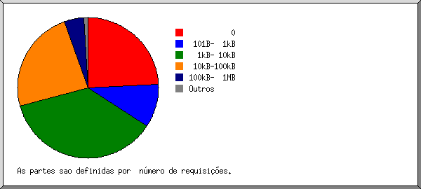
| tamanho | N.req | %bytes |
|---|---|---|
| 0 | 91635 | |
| 1B- 10B | 0 | |
| 11B- 100B | 1015 | |
| 101B- 1kB | 36914 | 0,63% |
| 1kB- 10kB | 138767 | 23,42% |
| 10kB-100kB | 48418 | 75,93% |
| 100kB- 1MB | 2 | 0,01% |
(Ir a: Início | Sumário Geral | Relatório Mensal | Resumo Diário | Resumo Horário | Relatório de Domínios | Relatório de organizações | Relatório de referência redirecionada | Relatório de referência falhada | Relatório do site de referência | Relatório de Browsers | Resumo de Browsers | Relatório de Sistemas Operacionais | Relatório de Códigos de Estado | Relatório de Tamanho de Arquivo | Relatório de Tipos de Arquivo | Relatório de Diretórios | Relatório de Requisições)
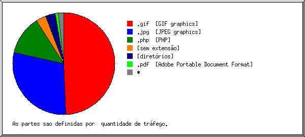
Mostrando as extensões com pelo menos 0,1% do tráfego, ordenadas por quantidade de tráfego.
| N.req | %bytes | extensão |
|---|---|---|
| 157462 | 71,96% | .jpg |
| 43539 | 15,99% | .php |
| 10847 | 6,73% | [diretórios] |
| 4154 | 2,20% | [sem extensão] |
| 71151 | 1,91% | .gif |
| 16920 | 1,12% | .css |
| 12678 | 0,09% | [não listadas: 1 extensão] |
(Ir a: Início | Sumário Geral | Relatório Mensal | Resumo Diário | Resumo Horário | Relatório de Domínios | Relatório de organizações | Relatório de referência redirecionada | Relatório de referência falhada | Relatório do site de referência | Relatório de Browsers | Resumo de Browsers | Relatório de Sistemas Operacionais | Relatório de Códigos de Estado | Relatório de Tamanho de Arquivo | Relatório de Tipos de Arquivo | Relatório de Diretórios | Relatório de Requisições)
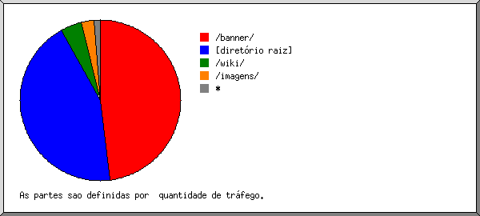
Mostrando os diretórios com pelo menos 0,01% do tráfego, ordenados por quantidade de tráfego.
| N.req | %bytes | diretório |
|---|---|---|
| 279901 | 89,52% | [diretório raiz] |
| 2179 | 4,28% | /imagens/ |
| 15518 | 4,25% | /admin/ |
| 14232 | 1,45% | /novo/ |
| 4520 | 0,27% | /contador/ |
| 345 | 0,22% | /index.php/ |
| 56 | [não listados: 1 diretório] |
(Ir a: Início | Sumário Geral | Relatório Mensal | Resumo Diário | Resumo Horário | Relatório de Domínios | Relatório de organizações | Relatório de referência redirecionada | Relatório de referência falhada | Relatório do site de referência | Relatório de Browsers | Resumo de Browsers | Relatório de Sistemas Operacionais | Relatório de Códigos de Estado | Relatório de Tamanho de Arquivo | Relatório de Tipos de Arquivo | Relatório de Diretórios | Relatório de Requisições)
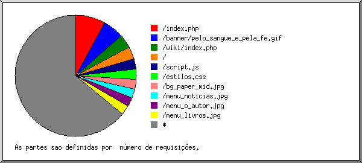
Mostrando os arquivos com pelo menos 20 requisições, ordenados por número de requisições.
| N.req | %bytes | ult. horario | arquivo |
|---|---|---|---|
| 18225 | 10,19% | 31/Jan/2007 08:28 | /index.php |
| 2746 | 1,59% | 31/Jan/2007 01:13 | /index.php?pg=livros |
| 1654 | 0,62% | 30/Jan/2007 13:06 | /index.php?pg=noticias |
| 1620 | 0,60% | 31/Jan/2007 01:16 | /index.php?pg=t2g |
| 1497 | 0,92% | 30/Jan/2007 20:54 | /index.php?pg=o_autor |
| 1339 | 0,69% | 30/Jan/2007 19:48 | /index.php?pg=agradecimentos |
| 1220 | 0,59% | 31/Jan/2007 01:16 | /index.php?pg=pre_venda |
| 770 | 0,54% | 29/Jan/2007 04:12 | /index.php?pg=arquivos&id=63 |
| 509 | 0,35% | 30/Jan/2007 13:13 | /index.php?pg=arquivos&data=2006-12 |
| 378 | 0,31% | 30/Jan/2007 16:58 | /index.php?pg=arquivos&data=2007-1 |
| 357 | 0,17% | 29/Jan/2007 16:35 | /index.php?pg=arquivos&id=62 |
| 252 | 0,09% | 28/Jan/2007 10:57 | /index.php?pg=arquivos&id=3 |
| 220 | 0,10% | 30/Jan/2007 04:33 | /index.php?pg=arquivos&id=64 |
| 215 | 0,13% | 26/Jan/2007 15:15 | /index.php?pg=arquivos&id=60 |
| 154 | 0,23% | 30/Jan/2007 21:11 | /index.php?pg=arquivos&data=2005-12 |
| 141 | 0,16% | 29/Jan/2007 05:55 | /index.php?pg=arquivos&data=2006-11 |
| 139 | 0,06% | 24/Jan/2007 05:57 | /index.php?pg=arquivos&id=59 |
| 128 | 0,14% | 27/Jan/2007 15:13 | /index.php?pg=arquivos&data=2006-9 |
| 124 | 0,19% | 30/Jan/2007 12:01 | /index.php?pg=arquivos&data=2006-10 |
| 110 | 0,11% | 30/Jan/2007 12:02 | /index.php?pg=arquivos&data=2006-8 |
| 110 | 0,04% | 27/Jan/2007 11:58 | /index.php?pg=arquivos&id=1 |
| 107 | 0,06% | 31/Jan/2007 08:28 | /index.php?pg=arquivos&id=68 |
| 106 | 0,13% | 29/Jan/2007 08:24 | /index.php?pg=arquivos&data=2006-7 |
| 105 | 0,10% | 29/Jan/2007 08:23 | /index.php?pg=arquivos&data=2006-6 |
| 89 | 0,10% | 27/Jan/2007 03:22 | /index.php?pg=arquivos&data=2006-5 |
| 81 | 0,02% | 14/Dez/2006 11:05 | /index.php?pg=arquivos&data=6-12 |
| 74 | 0,04% | 30/Jan/2007 16:11 | /index.php?pg=arquivos&id=61 |
| 69 | 0,07% | 29/Jan/2007 16:37 | /index.php?pg=arquivos&data=2006-3 |
| 68 | 0,10% | 30/Jan/2007 13:03 | /index.php?pg=arquivos&data=2006-1 |
| 64 | 0,05% | 23/Jan/2007 01:06 | /index.php?pg=arquivos&data=2006-2 |
| 55 | 0,04% | 30/Jan/2007 19:14 | /index.php?pg=arquivos&data=2006-4 |
| 49 | 0,02% | 29/Jan/2007 10:35 | /index.php?pg=arquivos&id=38 |
| 48 | 0,02% | 29/Jan/2007 10:28 | /index.php?pg=arquivos&id=20 |
| 48 | 0,02% | 29/Jan/2007 11:52 | /index.php?pg=arquivos&id=23 |
| 48 | 0,02% | 29/Jan/2007 10:15 | /index.php?pg=arquivos&id=42 |
| 47 | 0,02% | 31/Jan/2007 02:11 | /index.php?pg=arquivos&id=67 |
| 47 | 0,02% | 29/Jan/2007 11:07 | /index.php?pg=arquivos&id=10 |
| 46 | 0,03% | 27/Jan/2007 09:33 | /index.php? |
| 45 | 0,02% | 16/Jan/2007 11:26 | /index.php?pg=arquivos&id=65 |
| 44 | 0,02% | 29/Jan/2007 08:46 | /index.php?pg=arquivos&id=17 |
| 43 | 0,02% | 29/Jan/2007 09:56 | /index.php?pg=arquivos&id=58 |
| 42 | 0,02% | 29/Jan/2007 16:19 | /index.php?pg=arquivos&id=50 |
| 41 | 0,02% | 28/Jan/2007 08:20 | /index.php?pg=arquivos&id=57 |
| 40 | 0,02% | 29/Jan/2007 09:50 | /index.php?pg=arquivos&id=25 |
| 40 | 0,02% | 29/Jan/2007 09:53 | /index.php?pg=arquivos&id=27 |
| 40 | 0,02% | 28/Jan/2007 08:14 | /index.php?pg=arquivos&id=29 |
| 40 | 0,02% | 28/Jan/2007 10:41 | /index.php?pg=arquivos&id=39 |
| 40 | 0,02% | 29/Jan/2007 10:38 | /index.php?pg=arquivos&id=51 |
| 39 | 0,02% | 28/Jan/2007 10:51 | /index.php?pg=arquivos&id=31 |
| 39 | 0,02% | 28/Jan/2007 09:02 | /index.php?pg=arquivos&id=46 |
| 39 | 0,02% | 28/Jan/2007 09:24 | /index.php?pg=arquivos&id=49 |
| 38 | 0,02% | 27/Jan/2007 10:55 | /index.php?pg=arquivos&id=28 |
| 38 | 0,02% | 27/Jan/2007 09:18 | /index.php?pg=arquivos&id=33 |
| 38 | 0,02% | 27/Jan/2007 09:11 | /index.php?pg=arquivos&id=35 |
| 38 | 0,02% | 27/Jan/2007 10:42 | /index.php?pg=arquivos&id=41 |
| 37 | 0,02% | 27/Jan/2007 09:15 | /index.php?pg=arquivos&id=34 |
| 37 | 0,02% | 27/Jan/2007 09:08 | /index.php?pg=arquivos&id=43 |
| 37 | 0,02% | 27/Jan/2007 14:31 | /index.php?pg=arquivos&id=44 |
| 37 | 0,02% | 27/Jan/2007 10:24 | /index.php?pg=arquivos&id=56 |
| 36 | 0,02% | 30/Jan/2007 13:29 | /index.php?pg=arquivos&id=22 |
| 36 | 0,02% | 27/Jan/2007 16:44 | /index.php?pg=arquivos&id=32 |
| 36 | 0,02% | 27/Jan/2007 16:16 | /index.php?pg=arquivos&id=37 |
| 36 | 0,02% | 27/Jan/2007 11:23 | /index.php?pg=arquivos&id=11 |
| 36 | 0,03% | 27/Jan/2007 11:30 | /index.php?pg=arquivos&id=13 |
| 36 | 0,02% | 27/Jan/2007 11:27 | /index.php?pg=arquivos&id=14 |
| 36 | 0,02% | 30/Jan/2007 13:19 | /index.php?pg=arquivos&id=18 |
| 35 | 0,02% | 30/Jan/2007 12:33 | /index.php?pg=arquivos&id=36 |
| 35 | 0,02% | 30/Jan/2007 12:37 | /index.php?pg=arquivos&id=48 |
| 35 | 0,01% | 29/Jan/2007 11:00 | /index.php?pg=arquivos&id=2 |
| 35 | 0,01% | 27/Jan/2007 17:04 | /index.php?pg=arquivos&id=12 |
| 35 | 0,02% | 30/Jan/2007 13:23 | /index.php?pg=arquivos&id=55 |
| 34 | 0,02% | 30/Jan/2007 13:33 | /index.php?pg=arquivos&id=15 |
| 32 | 0,01% | 28/Jan/2007 12:49 | /index.php?pg=arquivos&id=9 |
| 31 | 0,01% | 28/Jan/2007 09:21 | /index.php?pg=arquivos&id=26 |
| 30 | 0,02% | 28/Jan/2007 10:48 | /index.php?pg=arquivos&id=53 |
| 29 | 0,01% | 27/Jan/2007 10:03 | /index.php?pg=arquivos&id=24 |
| 29 | 0,01% | 27/Jan/2007 11:44 | /index.php?pg=arquivos&id=6 |
| 29 | 0,01% | 27/Jan/2007 12:01 | /index.php?pg=arquivos&id=7 |
| 29 | 0,01% | 27/Jan/2007 12:32 | /index.php?pg=arquivos&id=8 |
| 29 | 0,02% | 27/Jan/2007 10:28 | /index.php?pg=arquivos&id=54 |
| 27 | 0,01% | 30/Jan/2007 13:36 | /index.php?pg=arquivos&id=4 |
| 25 | 0,01% | 27/Jan/2007 12:34 | /index.php?pg=arquivos&id=16 |
| 24 | 0,01% | 27/Jan/2007 13:57 | /index.php?pg=arquivos&id=21 |
| 23 | 0,01% | 28/Jan/2007 08:55 | /index.php?pg=arquivos&id=47 |
| 23 | 0,01% | 28/Jan/2007 12:05 | /index.php?pg=arquivos&id=19 |
| 21 | 0,01% | 30/Jan/2007 12:56 | /index.php?pg=arquivos&id=40 |
| 21 | 0,01% | 30/Jan/2007 12:50 | /index.php?pg=arquivos&id=45 |
| 14 | 0,01% | 28/Jan/2007 12:14 | /index.php?pg=arquivos&id=5 |
| 12655 | 0,07% | 31/Jan/2007 02:11 | /script.js |
| 12606 | 1,01% | 31/Jan/2007 02:11 | /estilos.css |
| 12588 | 12,73% | 31/Jan/2007 02:12 | /bg_paper_mid.jpg |
| 12412 | 1,38% | 31/Jan/2007 02:12 | /menu_noticias.jpg |
| 12391 | 1,29% | 31/Jan/2007 02:12 | /menu_pre_venda.jpg |
| 12376 | 1,25% | 31/Jan/2007 02:12 | /menu_agradecimentos.jpg |
| 12368 | 1,21% | 31/Jan/2007 02:12 | /menu_o_autor.jpg |
| 12366 | 1,50% | 31/Jan/2007 02:12 | /menu_t2g.jpg |
| 12360 | 1,21% | 31/Jan/2007 02:12 | /menu_livros.jpg |
| 12235 | 0,48% | 31/Jan/2007 02:12 | /menu_arquivos.gif |
| 12193 | 0,11% | 31/Jan/2007 02:12 | /divider.gif |
| 12186 | 31,08% | 31/Jan/2007 02:12 | /head.jpg |
| 12118 | 0,91% | 31/Jan/2007 02:12 | /bg_menu_body.jpg |
| 12052 | 0,12% | 31/Jan/2007 02:12 | /divider2.gif |
| 11973 | 1,02% | 31/Jan/2007 02:12 | /bg_menu_head.jpg |
| 11942 | 1,04% | 31/Jan/2007 02:12 | /bg_menu_foot.jpg |
| 11893 | 11,89% | 31/Jan/2007 02:12 | /bg_paper_bot.jpg |
| 11069 | 0,52% | 31/Jan/2007 02:12 | /menu_posts_recentes.gif |
| 10917 | 0,43% | 31/Jan/2007 02:12 | /menu_links.gif |
| 10875 | 0,15% | 31/Jan/2007 02:12 | /icon.gif |
| 10615 | 6,68% | 31/Jan/2007 01:12 | / |
| 10150 | 4,02% | 29/Jan/2007 20:36 | /admin/index.php |
| 1666 | 0,87% | 29/Jan/2007 20:31 | /admin/index.php?m=posts |
| 924 | 0,43% | 22/Jan/2007 01:02 | /admin/index.php?m=novo_post |
| 855 | 0,71% | 8/Jan/2007 23:10 | /admin/index.php?m=posts&edit=63 |
| 614 | 0,05% | 23/Jan/2007 18:42 | /admin/index.php?m=contador |
| 425 | 0,18% | 16/Jan/2007 20:30 | /admin/index.php?m=posts&id=63 |
| 385 | 0,24% | 23/Jan/2007 14:47 | /admin/index.php?m=posts&id= |
| 330 | 0,04% | 16/Jan/2007 11:31 | /admin/index.php?m=posts&id=65 |
| 270 | 0,15% | 16/Jan/2007 11:46 | /admin/index.php?m=posts&edit=66 |
| 270 | 0,17% | 16/Jan/2007 11:41 | /admin/index.php?m=posts&apagar=65 |
| 149 | 0,08% | 3/Jan/2007 10:51 | /admin/index.php?m=posts&edit=1 |
| 140 | 0,11% | 23/Jan/2007 14:58 | /admin/index.php?m=posts&edit=68 |
| 138 | 0,10% | 29/Jan/2007 20:36 | /admin/index.php?m=posts&edit=67 |
| 112 | 0,03% | 29/Jan/2007 20:31 | /admin/index.php?m=posts&id=67 |
| 107 | 0,07% | 16/Jan/2007 11:27 | /admin/index.php?m=posts&edit=64 |
| 103 | 0,02% | 3/Jan/2007 10:51 | /admin/index.php?m=posts&id=3 |
| 85 | 0,02% | 23/Jan/2007 18:42 | /admin/index.php?m=posts&id=64 |
| 77 | 0,03% | 26/Jan/2007 22:09 | /admin/index.php?m=posts&id=68 |
| 75 | 0,01% | 16/Jan/2007 11:46 | /admin/index.php?m=posts&id=66 |
| 74 | 0,01% | 3/Jan/2007 10:51 | /admin/index.php?m=posts&id=1 |
| 70 | 0,04% | 17/Jan/2007 17:27 | /admin/index.php?m=posts&edit=21 |
| 65 | 0,02% | 16/Jan/2007 20:30 | /admin/index.php?m=posts&id=62 |
| 59 | 0,01% | 23/Jan/2007 18:42 | /admin/index.php?m=noticias |
| 56 | 0,04% | 17/Jan/2007 17:26 | /admin/index.php?m=posts&edit=40 |
| 56 | 0,04% | 17/Jan/2007 16:54 | /admin/index.php?m=posts&edit=5 |
| 56 | 0,03% | 17/Jan/2007 17:02 | /admin/index.php?m=posts&edit=19 |
| 56 | 0,01% | 17/Jan/2007 17:27 | /admin/index.php?m=posts&id=45 |
| 54 | 0,04% | 5/Jan/2007 00:47 | /admin/index.php?m=posts&edit=39 |
| 45 | 0,02% | 16/Jan/2007 11:26 | /admin/index.php?m=posts&edit=65 |
| 42 | 0,03% | 17/Jan/2007 17:27 | /admin/index.php?m=posts&edit=45 |
| 42 | 0,01% | 17/Jan/2007 16:56 | /admin/index.php?m=posts&id=30 |
| 42 | 0,01% | 17/Jan/2007 16:34 | /admin/index.php?m=posts&id=5 |
| 42 | 0,01% | 17/Jan/2007 17:27 | /admin/index.php?m=posts&id=21 |
| 42 | 0,01% | 17/Jan/2007 17:26 | /admin/index.php?m=posts&id=40 |
| 30 | 0,02% | 16/Jan/2007 11:46 | /admin/index.php?m=posts&apagar=66 |
| 28 | 0,02% | 17/Jan/2007 16:17 | /admin/index.php?m=posts&edit=61 |
| 28 | 0,02% | 17/Jan/2007 17:27 | /admin/index.php?m=posts&edit=47 |
| 28 | 0,01% | 17/Jan/2007 17:02 | /admin/index.php?m=posts&id=19 |
| 28 | 0,02% | 17/Jan/2007 16:56 | /admin/index.php?m=posts&edit=30 |
| 28 | 0,02% | 17/Jan/2007 16:55 | /admin/index.php?m=posts&edit=16 |
| 28 | 0,02% | 17/Jan/2007 17:27 | /admin/index.php?m=posts&edit=54 |
| 27 | 0,01% | 5/Jan/2007 00:45 | /admin/index.php?m=posts&id=39 |
| 22 | 0,01% | 9/Jan/2007 23:09 | /admin/index.php?m=posts&id=63&aprovar=1 |
| 22 | 0,01% | 9/Jan/2007 23:09 | /admin/index.php?m=posts&id=63&aprovar=2 |
| 22 | 0,01% | 9/Jan/2007 23:09 | /admin/index.php?m=posts&id=63&aprovar=3 |
| 22 | 0,01% | 9/Jan/2007 23:09 | /admin/index.php?m=posts&id=63&aprovar=4 |
| 21 | 0,01% | 10/Jan/2007 18:17 | /admin/index.php?m=posts&id=63&aprovar=5 |
| 21 | 0,01% | 10/Jan/2007 18:18 | /admin/index.php?m=posts&id=63&aprovar=6 |
| 21 | 0,01% | 10/Jan/2007 18:17 | /admin/index.php?m=posts&id=63&aprovar=7 |
| 15 | 0,01% | 25/Dez/2006 18:53 | /admin/index.php?m=posts&edit=3 |
| 14 | 0,01% | 17/Jan/2007 17:03 | /admin/index.php?m=nova_noticia |
| 14 | 17/Jan/2007 16:56 | /admin/index.php?m=posts&id=51 | |
| 14 | 17/Jan/2007 16:54 | /admin/index.php?m=posts&id=16 | |
| 14 | 17/Jan/2007 17:27 | /admin/index.php?m=posts&id=54 | |
| 14 | 17/Jan/2007 16:17 | /admin/index.php?m=posts&id=61 | |
| 14 | 17/Jan/2007 17:27 | /admin/index.php?m=posts&id=47 | |
| 4520 | 0,27% | 8/Jan/2007 22:22 | /contador/contador.php |
| 4520 | 0,27% | 8/Jan/2007 22:22 | /contador/contador.php?id=contador |
| 3926 | 0,50% | 30/Jan/2007 19:18 | /comentarios.php |
| 1489 | 0,27% | 30/Jan/2007 13:39 | /comentarios.php?id=63 |
| 244 | 0,02% | 27/Jan/2007 14:02 | /comentarios.php?id=3 |
| 134 | 0,01% | 29/Jan/2007 09:43 | /comentarios.php?id=64 |
| 64 | 0,01% | 29/Jan/2007 14:10 | /comentarios.php?id=1 |
| 55 | 27/Jan/2007 03:52 | /comentarios.php? | |
| 38 | 28/Jan/2007 11:58 | /comentarios.php?id=28 | |
| 37 | 29/Jan/2007 12:40 | /comentarios.php?id=30 | |
| 37 | 27/Jan/2007 12:49 | /comentarios.php?id=36 | |
| 37 | 27/Jan/2007 13:26 | /comentarios.php?id=38 | |
| 37 | 27/Jan/2007 13:14 | /comentarios.php?id=41 | |
| 37 | 28/Jan/2007 11:07 | /comentarios.php?id=42 | |
| 37 | 27/Jan/2007 12:43 | /comentarios.php?id=45 | |
| 37 | 27/Jan/2007 12:46 | /comentarios.php?id=47 | |
| 36 | 29/Jan/2007 13:34 | /comentarios.php?id=39 | |
| 36 | 27/Jan/2007 12:40 | /comentarios.php?id=18 | |
| 36 | 27/Jan/2007 13:28 | /comentarios.php?id=21 | |
| 35 | 29/Jan/2007 12:37 | /comentarios.php?id=31 | |
| 35 | 29/Jan/2007 13:02 | /comentarios.php?id=37 | |
| 35 | 29/Jan/2007 12:33 | /comentarios.php?id=48 | |
| 35 | 27/Jan/2007 19:03 | /comentarios.php?id=19 | |
| 35 | 30/Jan/2007 17:02 | /comentarios.php?id=55 | |
| 35 | 30/Jan/2007 17:08 | /comentarios.php?id=56 | |
| 35 | 27/Jan/2007 13:20 | /comentarios.php?id=22 | |
| 35 | 30/Jan/2007 18:34 | /comentarios.php?id=23 | |
| 34 | 30/Jan/2007 16:20 | /comentarios.php?id=34 | |
| 34 | 30/Jan/2007 18:07 | /comentarios.php?id=40 | |
| 34 | 29/Jan/2007 12:27 | /comentarios.php?id=46 | |
| 34 | 30/Jan/2007 16:23 | /comentarios.php?id=49 | |
| 34 | 29/Jan/2007 13:38 | /comentarios.php?id=11 | |
| 34 | 30/Jan/2007 13:43 | /comentarios.php?id=16 | |
| 34 | 27/Jan/2007 18:26 | /comentarios.php?id=57 | |
| 34 | 30/Jan/2007 17:34 | /comentarios.php?id=20 | |
| 34 | 30/Jan/2007 18:10 | /comentarios.php?id=29 | |
| 33 | 30/Jan/2007 17:49 | /comentarios.php?id=33 | |
| 33 | 30/Jan/2007 19:18 | /comentarios.php?id=10 | |
| 33 | 30/Jan/2007 18:37 | /comentarios.php?id=13 | |
| 33 | 30/Jan/2007 18:40 | /comentarios.php?id=15 | |
| 29 | 28/Jan/2007 12:40 | /comentarios.php?id=5 | |
| 29 | 28/Jan/2007 12:37 | /comentarios.php?id=7 | |
| 29 | 28/Jan/2007 11:55 | /comentarios.php?id=52 | |
| 28 | 27/Jan/2007 17:38 | /comentarios.php?id=35 | |
| 28 | 27/Jan/2007 14:00 | /comentarios.php?id=2 | |
| 28 | 29/Jan/2007 11:42 | /comentarios.php?id=27 | |
| 27 | 29/Jan/2007 13:09 | /comentarios.php?id=32 | |
| 27 | 29/Jan/2007 14:22 | /comentarios.php?id=4 | |
| 27 | 29/Jan/2007 14:19 | /comentarios.php?id=6 | |
| 27 | 29/Jan/2007 14:29 | /comentarios.php?id=8 | |
| 27 | 29/Jan/2007 14:26 | /comentarios.php?id=9 | |
| 27 | 29/Jan/2007 13:05 | /comentarios.php?id=51 | |
| 27 | 29/Jan/2007 13:31 | /comentarios.php?id=53 | |
| 27 | 29/Jan/2007 13:28 | /comentarios.php?id=54 | |
| 27 | 27/Jan/2007 17:13 | /comentarios.php?id=58 | |
| 27 | 29/Jan/2007 11:48 | /comentarios.php?id=24 | |
| 27 | 29/Jan/2007 11:58 | /comentarios.php?id=60 | |
| 27 | 29/Jan/2007 12:24 | /comentarios.php?id=25 | |
| 27 | 14/Dez/2006 12:46 | /comentarios.php?post=3 | |
| 26 | 30/Jan/2007 17:05 | /comentarios.php?id=43 | |
| 26 | 30/Jan/2007 16:59 | /comentarios.php?id=44 | |
| 26 | 27/Jan/2007 08:44 | /comentarios.php?id=12 | |
| 26 | 27/Jan/2007 19:43 | /comentarios.php?id=14 | |
| 26 | 30/Jan/2007 18:04 | /comentarios.php?id=50 | |
| 26 | 27/Jan/2007 17:30 | /comentarios.php?id=17 | |
| 26 | 27/Jan/2007 16:53 | /comentarios.php?id=59 | |
| 26 | 27/Jan/2007 17:15 | /comentarios.php?id=61 | |
| 26 | 30/Jan/2007 13:46 | /comentarios.php?id=62 | |
| 26 | 29/Jan/2007 11:04 | /comentarios.php?id=67 | |
| 19 | 27/Jan/2007 18:21 | /comentarios.php?id=26 | |
| 10 | 30/Jan/2007 12:30 | /comentarios.php?id=68 | |
| 3010 | 0,32% | 14/Dez/2006 10:15 | /novo/admin/index.php |
| 1220 | 0,04% | 14/Dez/2006 10:15 | /novo/admin/index.php?m=posts |
| 439 | 0,09% | 14/Dez/2006 10:15 | /novo/admin/index.php?m=novo_post |
| 319 | 0,02% | 14/Dez/2006 10:09 | /novo/admin/index.php?m=posts&id=1 |
| 249 | 0,03% | 14/Dez/2006 10:15 | /novo/admin/index.php?m=posts&id=3 |
| 130 | 0,06% | 13/Dez/2006 18:58 | /novo/admin/index.php?m=posts&edit=3 |
| 110 | 0,02% | 13/Dez/2006 18:52 | /novo/admin/index.php?m=posts&id=3&aprovar=2 |
| 70 | 0,01% | 13/Dez/2006 19:01 | /novo/admin/index.php?m=posts&id=3&aprovar=1 |
| 33 | 12/Dez/2006 20:14 | /novo/admin/index.php?m=comentarios | |
| 30 | 13/Dez/2006 19:01 | /novo/admin/index.php?m=posts&id=3&desaprovar=1 | |
| 30 | 0,02% | 13/Dez/2006 18:56 | /novo/admin/index.php?m=posts&edit=1 |
| 20 | 13/Dez/2006 18:52 | /novo/admin/index.php?m=posts&id=3&desaprovar=2 | |
| 20 | 13/Dez/2006 18:53 | /novo/admin/index.php?m=posts&id=3&apaga=2 | |
| 20 | 13/Dez/2006 18:55 | /novo/admin/index.php?m=posts&id=3&apagar=2 | |
| 10 | 13/Dez/2006 18:58 | /novo/admin/index.php?m=posts&id= | |
| 10 | 13/Dez/2006 14:21 | /novo/admin/index.php?m=posts&id=2 | |
| 2977 | 0,07% | 29/Jan/2007 20:31 | /admin/estilos.css |
| 2105 | 4,24% | 30/Jan/2007 16:58 | /imagens/cartas_jovem_escritor.jpg |
| 1314 | 0,03% | 13/Dez/2006 20:30 | /novo/admin/estilos.css |
| 1270 | 0,05% | 29/Jan/2007 18:19 | /admin/cola.php |
| 450 | 0,01% | 6/Jan/2007 21:15 | /admin/cola.php?PHPSESSID=634f69fb09faf20be73e30799a5698ee |
| 32 | 15/Jan/2007 22:42 | /admin/cola.php?PHPSESSID=e74e22fb41db464047149e5a40c1aebd | |
| 25 | 7/Jan/2007 01:07 | /admin/cola.php?PHPSESSID=b12c026c20a6a847f1d9cc3cde4ede5d | |
| 15 | 16/Jan/2007 10:57 | /admin/cola.php?PHPSESSID=714df7a54a29546000b4161648b40e75 | |
| 1208 | 0,43% | 30/Jan/2007 20:54 | /claudio_villa.jpg |
| 961 | 0,39% | 7/Dez/2006 19:07 | /novo/index.php |
| 357 | 0,19% | 7/Dez/2006 19:07 | /novo/index.php?pg=o_autor |
| 102 | 0,03% | 7/Dez/2006 19:07 | /novo/index.php?pg=t2g |
| 93 | 0,04% | 7/Dez/2006 19:07 | /novo/index.php?pg=pre_venda |
| 70 | 0,04% | 7/Dez/2006 19:07 | /novo/index.php?pg=livros |
| 45 | 0,01% | 7/Dez/2006 19:07 | /novo/index.php?pg=noticias |
| 39 | 0,01% | 7/Dez/2006 19:07 | /novo/index.php?pg=agradecimentos |
| 32 | 0,01% | 29/Nov/2006 23:12 | /novo/index.php?pg=arquivo&data=06-11 |
| 22 | 0,01% | 30/Nov/2006 12:03 | /novo/index.php?pg=arquivo&data=06-12 |
| 14 | 0,01% | 5/Dez/2006 01:23 | /novo/index.php?pg=arquivos&data=06-11 |
| 14 | 0,01% | 5/Dez/2006 01:23 | /novo/index.php?pg=arquivos&data=06-12 |
| 752 | 0,01% | 7/Dez/2006 19:07 | /novo/menu_noticias.jpg |
| 726 | 0,52% | 29/Jan/2007 04:12 | /tentar_um_recomeco |
| 683 | 17/Jan/2007 17:27 | /admin/str_flat.php | |
| 27 | 5/Jan/2007 00:32 | /admin/str_flat.php?PHPSESSID=d4deb0b6dbe0bb58ecda85d322f74cd8&str=Tentar um Recome%E7o&rnd=0.42445190986053816 | |
| 15 | 16/Jan/2007 11:01 | /admin/str_flat.php?PHPSESSID=714df7a54a29546000b4161648b40e75&str=titulo&rnd=0.7509150970777481 | |
| 15 | 16/Jan/2007 11:41 | /admin/str_flat.php?PHPSESSID=714df7a54a29546000b4161648b40e75&str=teste&rnd=0.6435641347771495 | |
| 14 | 17/Jan/2007 17:02 | /admin/str_flat.php?PHPSESSID=b8b90e6154dc49f4533af41e5120d135&str=Escalando a Muralha...&nospecials=1&rnd=0.35322459832009434 | |
| 14 | 17/Jan/2007 16:27 | /admin/str_flat.php?PHPSESSID=b8b90e6154dc49f4533af41e5120d135&str=Por Que Quis Ser Escritor 013 Parte II-&no_specials=1&rnd=0.39277834828278957 | |
| 14 | 17/Jan/2007 16:28 | /admin/str_flat.php?PHPSESSID=b8b90e6154dc49f4533af41e5120d135&str=Por Que Quis Ser Escritor 013 Parte II&no_specials=1&rnd=0.20010075515709114 | |
| 14 | 17/Jan/2007 16:27 | /admin/str_flat.php?PHPSESSID=b8b90e6154dc49f4533af41e5120d135&str=Por Que Quis Ser Escritor 013 Parte II%A7&no_specials=1&rnd=0.3344542354529284 | |
| 14 | 17/Jan/2007 17:26 | /admin/str_flat.php?PHPSESSID=b8b90e6154dc49f4533af41e5120d135&str=Shiver me Timbers - Piratas do Caribe 2, O Ba%FA do Homem Morto&nospecials=1&rnd=0.6434909921925418 | |
| 14 | 17/Jan/2007 16:31 | /admin/str_flat.php?PHPSESSID=b8b90e6154dc49f4533af41e5120d135&str=Por Que Quis Ser Escritor - Parte II&no_specials=1&rnd=0.41495301872768897 | |
| 14 | 17/Jan/2007 16:20 | /admin/str_flat.php?PHPSESSID=b8b90e6154dc49f4533af41e5120d135&str=Por Que Quis Ser Escritor 013 Parte II&no_specials=1&rnd=0.9265276140182527 | |
| 14 | 17/Jan/2007 16:33 | /admin/str_flat.php?PHPSESSID=b8b90e6154dc49f4533af41e5120d135&str=Por Que Quis Ser Escritor - Parte II&no_specials=1&rnd=0.6239144502799933 | |
| 14 | 17/Jan/2007 16:54 | /admin/str_flat.php?PHPSESSID=b8b90e6154dc49f4533af41e5120d135&str=Um Novo Livro Sobre...Piratas&nospecials=1&rnd=0.6041189578562909 | |
| 14 | 17/Jan/2007 16:30 | /admin/str_flat.php?PHPSESSID=b8b90e6154dc49f4533af41e5120d135&str=Por Que Quis Ser Escritor 013 Parte II&no_specials=1&rnd=0.8127363148495751 | |
| 14 | 17/Jan/2007 16:55 | /admin/str_flat.php?PHPSESSID=b8b90e6154dc49f4533af41e5120d135&str=Um Novo Livro Sobre...Piratas&nospecials=1&rnd=0.3897930261298378 | |
| 14 | 17/Jan/2007 17:27 | /admin/str_flat.php?PHPSESSID=b8b90e6154dc49f4533af41e5120d135&str=O Pai Rico Que Mexeu no Queijo do Monge Executivo Pobre&nospecials=1&rnd=0.866172112386089 | |
| 14 | 17/Jan/2007 17:27 | /admin/str_flat.php?PHPSESSID=b8b90e6154dc49f4533af41e5120d135&str=Personagens Femininos II - Psicol%F3gico X Belo&nospecials=1&rnd=0.38944554308150015 | |
| 14 | 17/Jan/2007 16:30 | /admin/str_flat.php?PHPSESSID=b8b90e6154dc49f4533af41e5120d135&str=Por Que Quis Ser Escritor 013 Parte II&no_specials=1&rnd=0.5843526717592664 | |
| 14 | 17/Jan/2007 17:26 | /admin/str_flat.php?PHPSESSID=b8b90e6154dc49f4533af41e5120d135&str=Nota Extra - Para os Leitores do Meu Blog&nospecials=1&rnd=0.888181049554633 | |
| 14 | 17/Jan/2007 16:30 | /admin/str_flat.php?PHPSESSID=b8b90e6154dc49f4533af41e5120d135&str=Por Que Quis Ser Escritor 013 Parte II&no_specials=1&rnd=0.590296101866681 | |
| 14 | 17/Jan/2007 16:27 | /admin/str_flat.php?PHPSESSID=b8b90e6154dc49f4533af41e5120d135&str=Por Que Quis Ser Escritor 013 Parte IIa&no_specials=1&rnd=0.006868907343665742 | |
| 14 | 17/Jan/2007 16:20 | /admin/str_flat.php?PHPSESSID=b8b90e6154dc49f4533af41e5120d135&str=Por Que Quis Ser Escritor 013 Parte II&no_specials=1&rnd=0.6580167925846785 | |
| 14 | 17/Jan/2007 16:57 | /admin/str_flat.php?PHPSESSID=b8b90e6154dc49f4533af41e5120d135&str=Shiver me Timbers 013 Piratas do Caribe 2,&nospecials=1&rnd=0.5340503451327084 | |
| 14 | 17/Jan/2007 16:56 | /admin/str_flat.php?PHPSESSID=b8b90e6154dc49f4533af41e5120d135&str=O que %E8 Fantasia Afinal%3F&nospecials=1&rnd=0.44370328459962494 | |
| 14 | 17/Jan/2007 17:26 | /admin/str_flat.php?PHPSESSID=b8b90e6154dc49f4533af41e5120d135&str=Shiver me Timbers 013 Piratas do Caribe 2, O Ba%FA do Homem Morto&nospecials=1&rnd=0.655006274569969 | |
| 14 | 17/Jan/2007 16:34 | /admin/str_flat.php?PHPSESSID=b8b90e6154dc49f4533af41e5120d135&str=Por Que Quis Ser Escritor - Parte II&no_specials=1&rnd=0.03692193453239889 | |
| 14 | 17/Jan/2007 16:31 | /admin/str_flat.php?PHPSESSID=b8b90e6154dc49f4533af41e5120d135&str=Por Que Quis Ser Escritor - Parte II&no_specials=1&rnd=0.8870433725056821 | |
| 14 | 17/Jan/2007 16:30 | /admin/str_flat.php?PHPSESSID=b8b90e6154dc49f4533af41e5120d135&str=Por Que Quis Ser Escritor 013 Parte II&no_specials=1&rnd=0.3508284015680715 | |
| 14 | 17/Jan/2007 16:30 | /admin/str_flat.php?PHPSESSID=b8b90e6154dc49f4533af41e5120d135&str=Por Que Quis Ser Escritor 013 Parte II&no_specials=1&rnd=0.24452027987043778 | |
| 14 | 17/Jan/2007 16:29 | /admin/str_flat.php?PHPSESSID=b8b90e6154dc49f4533af41e5120d135&str=Por Que Quis Ser Escritor 013 Parte II&no_specials=1&rnd=0.47248586612059085 | |
| 14 | 17/Jan/2007 16:29 | /admin/str_flat.php?PHPSESSID=b8b90e6154dc49f4533af41e5120d135&str=Por Que Quis Ser Escritor 013 Parte II&no_specials=1&rnd=0.6571516205302849 | |
| 14 | 17/Jan/2007 16:34 | /admin/str_flat.php?PHPSESSID=b8b90e6154dc49f4533af41e5120d135&str=Por Que Quis Ser Escritor - Parte II&nospecials=1&rnd=0.35461137171206025 | |
| 14 | 17/Jan/2007 16:54 | /admin/str_flat.php?PHPSESSID=b8b90e6154dc49f4533af41e5120d135&str=Por Que Quis Ser Escritor - Parte II&nospecials=1&rnd=0.3312809641974467 | |
| 14 | 17/Jan/2007 16:56 | /admin/str_flat.php?PHPSESSID=b8b90e6154dc49f4533af41e5120d135&str=Escalando a Muralha...&nospecials=1&rnd=0.1439381611770404 | |
| 14 | 17/Jan/2007 16:30 | /admin/str_flat.php?PHPSESSID=b8b90e6154dc49f4533af41e5120d135&str=Por Que Quis Ser Escritor 013 Parte II&no_specials=1&rnd=0.8822291248229357 | |
| 14 | 17/Jan/2007 16:26 | /admin/str_flat.php?PHPSESSID=b8b90e6154dc49f4533af41e5120d135&str=Por Que Quis Ser Escritor 013 Parte II&no_specials=1&rnd=0.21227405740146565 | |
| 14 | 17/Jan/2007 16:32 | /admin/str_flat.php?PHPSESSID=b8b90e6154dc49f4533af41e5120d135&str=Por Que Quis Ser Escritor - Parte II&no_specials=1&rnd=0.8516529757028883 | |
| 14 | 17/Jan/2007 17:27 | /admin/str_flat.php?PHPSESSID=b8b90e6154dc49f4533af41e5120d135&str=Personagens Femininos I - Vivenciando a Personagem&nospecials=1&rnd=0.4799696547510258 | |
| 14 | 17/Jan/2007 16:20 | /admin/str_flat.php?PHPSESSID=b8b90e6154dc49f4533af41e5120d135&str=Por Que Quis Ser Escritor 013 Parte II&no_specials=1&rnd=0.06007322674622295 | |
| 14 | 17/Jan/2007 16:30 | /admin/str_flat.php?PHPSESSID=b8b90e6154dc49f4533af41e5120d135&str=Por Que Quis Ser Escritor 013 Parte II&no_specials=1&rnd=0.4356162815897815 | |
| 14 | 17/Jan/2007 16:57 | /admin/str_flat.php?PHPSESSID=b8b90e6154dc49f4533af41e5120d135&str=Shiver me Timbers - Piratas do Caribe 2,&nospecials=1&rnd=0.8030288886018995 | |
| 14 | 17/Jan/2007 16:27 | /admin/str_flat.php?PHPSESSID=b8b90e6154dc49f4533af41e5120d135&str=Por Que Quis Ser Escritor 013 Parte II-&no_specials=1&rnd=0.5352515763259262 | |
| 14 | 17/Jan/2007 16:20 | /admin/str_flat.php?PHPSESSID=b8b90e6154dc49f4533af41e5120d135&str=Por Que Quis Ser Escritor 013 Parte II&no_specials=1&rnd=0.5176971448337836 | |
| 14 | 17/Jan/2007 16:27 | /admin/str_flat.php?PHPSESSID=b8b90e6154dc49f4533af41e5120d135&str=Por Que Quis Ser Escritor 013 Parte II&no_specials=1&rnd=0.3940004354383204 | |
| 14 | 17/Jan/2007 16:17 | /admin/str_flat.php?PHPSESSID=b8b90e6154dc49f4533af41e5120d135&str=Foi Um Longo Ano...&no_specials=1&rnd=0.9750510333559805 | |
| 14 | 17/Jan/2007 16:31 | /admin/str_flat.php?PHPSESSID=b8b90e6154dc49f4533af41e5120d135&str=Por Que Quis Ser Escritor 013 Parte II&no_specials=1&rnd=0.555825727843315 | |
| 14 | 17/Jan/2007 16:29 | /admin/str_flat.php?PHPSESSID=b8b90e6154dc49f4533af41e5120d135&str=Por Que Quis Ser Escritor 013 Parte II&no_specials=1&rnd=0.5447858867519624 | |
| 14 | 17/Jan/2007 16:25 | /admin/str_flat.php?PHPSESSID=b8b90e6154dc49f4533af41e5120d135&str=Por Que Quis Ser Escritor 013 Parte II&no_specials=1&rnd=0.2856712447311044 | |
| 631 | 0,22% | 7/Dez/2006 19:07 | /novo/bg_paper_mid.jpg |
| 592 | 7/Dez/2006 19:07 | /novo/divider.gif | |
| 592 | 0,09% | 7/Dez/2006 19:07 | /novo/bg_paper_bot.jpg |
| 591 | 0,23% | 7/Dez/2006 19:07 | /novo/head.jpg |
| 591 | 0,01% | 7/Dez/2006 19:07 | /novo/menu_agradecimentos.jpg |
| 590 | 0,01% | 7/Dez/2006 19:07 | /novo/menu_livros.jpg |
| 484 | 0,01% | 7/Dez/2006 19:07 | /novo/menu_t2g.jpg |
| 418 | 7/Dez/2006 19:07 | /novo/divider2.gif | |
| 413 | 0,01% | 7/Dez/2006 19:07 | /novo/bg_menu_foot.jpg |
| 411 | 0,01% | 7/Dez/2006 19:07 | /novo/bg_menu_head.jpg |
| 407 | 0,01% | 7/Dez/2006 19:07 | /novo/bg_menu_body.jpg |
| 404 | 0,01% | 7/Dez/2006 19:07 | /novo/menu_o_autor.jpg |
| 382 | 0,01% | 7/Dez/2006 19:07 | /novo/menu_pre_venda.jpg |
| 357 | 0,18% | 29/Jan/2007 16:35 | /piratas_a_deriva |
| 337 | 4/Dez/2006 23:31 | /novo/arquivos.gif | |
| 297 | 0,04% | 7/Dez/2006 19:07 | /novo/claudio_villa.jpg |
| 223 | 7/Dez/2006 19:07 | /novo/icon.gif | |
| 220 | 0,10% | 30/Jan/2007 04:33 | /cartas_a_um_jovem_escritor |
| 215 | 0,13% | 26/Jan/2007 15:15 | /o_genio_dos_livros |
| 209 | 29/Nov/2006 23:23 | /novo/menu_oautor.jpg | |
| 209 | 29/Nov/2006 23:23 | /novo/menu_prevenda.jpg | |
| 196 | 0,05% | 3/Jan/2007 11:32 | /admin/post2.php |
| 168 | 0,07% | 3/Jan/2007 11:32 | /admin/post3.php |
| 165 | 0,12% | 16/Jan/2007 18:44 | /rss.php |
| 139 | 0,07% | 24/Jan/2007 05:57 | /tentando_superar_o_desanimo |
| 117 | 7/Dez/2006 19:07 | /novo/menu_arquivos.gif | |
| 107 | 0,06% | 31/Jan/2007 08:28 | /a_vida_e_uma_ficcao |
| 103 | 0,04% | 16/Dez/2006 02:30 | /maca_facao_e_minimo |
| 100 | 13/Dez/2006 17:54 | /novo/admin/str_flat.php | |
| 10 | 13/Dez/2006 14:37 | /novo/admin/str_flat.php?PHPSESSID=ff0e66d18c5a1b85f702df8ee5fefc6d&str=Ma%E7%E3&rnd=0.2738532437452847 | |
| 10 | 13/Dez/2006 14:38 | /novo/admin/str_flat.php?PHPSESSID=ff0e66d18c5a1b85f702df8ee5fefc6d&str=Ma%E7%E3 Banana Fac%E3o %E9 m%EDnimo &rnd=0.7402266025490883 | |
| 10 | 13/Dez/2006 17:54 | /novo/admin/str_flat.php?PHPSESSID=d8857d58f08b1090de12ca210ee12fe7&str=&rnd=0.6867805371139173 | |
| 10 | 13/Dez/2006 14:38 | /novo/admin/str_flat.php?PHPSESSID=ff0e66d18c5a1b85f702df8ee5fefc6d&str=Ma%E7%E3 Banana Fac%E3o %E9 m%EDnimo&rnd=0.174555185804185 | |
| 10 | 13/Dez/2006 17:54 | /novo/admin/str_flat.php?PHPSESSID=d8857d58f08b1090de12ca210ee12fe7&str=&rnd=0.9002787473475275 | |
| 10 | 13/Dez/2006 17:54 | /novo/admin/str_flat.php?PHPSESSID=d8857d58f08b1090de12ca210ee12fe7&str=&rnd=0.3093540281233172 | |
| 10 | 13/Dez/2006 14:37 | /novo/admin/str_flat.php?PHPSESSID=ff0e66d18c5a1b85f702df8ee5fefc6d&str=Ma%E7%E3&rnd=0.3482973816215118 | |
| 10 | 13/Dez/2006 14:38 | /novo/admin/str_flat.php?PHPSESSID=ff0e66d18c5a1b85f702df8ee5fefc6d&str=Ma%E7%E3 Banana Fac%E3o %E9 m%EDnimo&rnd=0.4029505575919542 | |
| 10 | 13/Dez/2006 14:52 | /novo/admin/str_flat.php?PHPSESSID=ff0e66d18c5a1b85f702df8ee5fefc6d&str=Ma%E7%E3 Banana Fac%E3o %E9 m%EDnimo a&rnd=0.35194159377190376 | |
| 10 | 13/Dez/2006 14:38 | /novo/admin/str_flat.php?PHPSESSID=ff0e66d18c5a1b85f702df8ee5fefc6d&str=Ma%E7%E3 Banana Fac%E3o %E9 m%EDnimo&rnd=0.8075649279868297 | |
| 92 | 14/Dez/2006 10:09 | /novo/admin/ | |
| 86 | 0,03% | 28/Jan/2007 10:57 | /por_que_quis_ser_escritor |
| 85 | 0,03% | 7/Dez/2006 19:07 | /novo/ |
| 74 | 0,04% | 30/Jan/2007 16:11 | /foi_um_longo_ano |
| 74 | 0,04% | 31/Jan/2007 02:12 | /imagens/maoquecria.jpg |
| 72 | 0,02% | 14/Dez/2006 18:18 | /teste |
| 54 | 14/Dez/2006 10:38 | /url.php | |
| 27 | 14/Dez/2006 10:38 | /url.php?path=teste | |
| 18 | 14/Dez/2006 10:37 | /url.php?path=admin | |
| 49 | 0,02% | 29/Jan/2007 10:35 | /cenas_que_nao_quero_escrever |
| 48 | 0,02% | 29/Jan/2007 10:15 | /escrevendo_com_baixa_tecnologia |
| 48 | 0,02% | 29/Jan/2007 10:28 | /uma_surpresa_muito_gratificante |
| 48 | 0,02% | 29/Jan/2007 11:52 | /o_ritual_para_escrever |
| 47 | 0,02% | 29/Jan/2007 11:07 | /buscando_inspiracao_em_novos_mares |
| 47 | 0,03% | 31/Jan/2007 02:11 | /a_mao_que_escreve |
| 45 | 0,02% | 16/Jan/2007 11:26 | /titulo |
| 44 | 0,02% | 29/Jan/2007 08:46 | /escritores_precipitados |
| 43 | 0,02% | 29/Jan/2007 09:56 | /flertando_com_o_capitao_kirk |
| 42 | 0,02% | 29/Jan/2007 16:19 | /o_estranho_numero_11 |
| 41 | 0,02% | 28/Jan/2007 08:20 | /uma_lenda_entre_dois_deuses |
| 40 | 0,02% | 29/Jan/2007 09:50 | /entre_escritores |
| 40 | 16/Jan/2007 10:56 | /admin/posts.m.php | |
| 40 | 0,02% | 29/Jan/2007 09:53 | /um_novo_projeto |
| 40 | 0,02% | 29/Jan/2007 10:38 | /uma_ajuda_inesperada |
| 40 | 0,02% | 28/Jan/2007 08:14 | /um_bom_comeco |
| 40 | 0,02% | 28/Jan/2007 10:41 | /ponto_de_apoio |
| 39 | 0,02% | 28/Jan/2007 09:24 | /uma_noticias_ha_muito_esperada |
| 39 | 0,02% | 28/Jan/2007 10:51 | /cartas_de_deus |
| 39 | 0,02% | 28/Jan/2007 09:02 | /o_nascimento_de_uma_personagem |
| 38 | 0,02% | 27/Jan/2007 09:11 | /sonho_corsario |
| 38 | 0,02% | 27/Jan/2007 09:18 | /a_longa_espera |
| 38 | 0,02% | 27/Jan/2007 10:42 | /tudo_o_que_sei_e_que_nada_sei |
| 38 | 0,02% | 27/Jan/2007 10:55 | /fantasia_no_brasil |
| 37 | 0,02% | 27/Jan/2007 10:24 | /construindo_um_mundo_digital |
| 37 | 0,02% | 27/Jan/2007 09:08 | /avancando_na_historia |
| 37 | 0,02% | 27/Jan/2007 14:31 | /a_primeira_leitora |
| 37 | 0,02% | 27/Jan/2007 09:15 | /o_primeiro_nao |
| 36 | 0,02% | 30/Jan/2007 13:29 | /uma_conversa_no_onibus |
| 36 | 0,02% | 27/Jan/2007 11:23 | /escrevendo_com_musica |
| 36 | 0,02% | 27/Jan/2007 11:27 | /experimentando_sensacoes |
| 36 | 0,02% | 27/Jan/2007 16:44 | /inspiracoes_arquitetonicas |
| 36 | 0,02% | 27/Jan/2007 16:16 | /inspiracoes_historicas |
| 36 | 0,03% | 27/Jan/2007 11:30 | /uma_aventura_de_verdade |
| 36 | 0,02% | 30/Jan/2007 13:19 | /a_muralha_invisivel |
| 35 | 0,02% | 30/Jan/2007 12:33 | /revisitando_fantasia |
| 35 | 0,01% | 27/Jan/2007 17:04 | /nota_extra |
| 35 | 0,02% | 30/Jan/2007 13:23 | /o_que_aprendi_com_o_capitao_nemo |
| 35 | 0,02% | 30/Jan/2007 12:37 | /dogmas_literarios |
| 35 | 0,01% | 29/Jan/2007 11:00 | /meu_primeiro_livro |
| 34 | 0,02% | 30/Jan/2007 13:33 | /um_cristo_para_me_ouvir |
| 32 | 0,02% | 28/Jan/2007 12:49 | /sonho_inspirador |
| 31 | 0,01% | 28/Jan/2007 09:21 | /criticas |
| 30 | 0,02% | 28/Jan/2007 10:48 | /arrogancia_autoral |
| 29 | 0,01% | 27/Jan/2007 11:44 | /a_maldicao_dos_ddones |
| 29 | 0,01% | 27/Jan/2007 12:01 | /uma_luz_no_fim_do_tunel |
| 29 | 0,01% | 27/Jan/2007 12:32 | /personagens_alheios |
| 29 | 0,01% | 27/Jan/2007 10:03 | /a_historia_sem_fim |
| 29 | 0,01% | 27/Jan/2007 11:58 | /obsessao_pelo_mar |
| 29 | 0,02% | 27/Jan/2007 10:28 | /o_pai_rico_que_mexeu_no_queijo_do_monge_executivo_pobre |
| 27 | 0,01% | 30/Jan/2007 13:36 | /somos_um_pais_de_escritores |
| 25 | 0,01% | 27/Jan/2007 12:34 | /um_novo_livro_sobre_piratas |
| 24 | 0,01% | 27/Jan/2007 13:57 | /nota_extra_para_os_leitores_do_meu_blog |
| 23 | 0,01% | 8/Jan/2007 22:21 | /index.php/ |
| 23 | 0,01% | 8/Jan/2007 22:21 | /index.php/menu_livros.jpg |
| 23 | 0,01% | 8/Jan/2007 22:21 | /index.php/divider.gif |
| 23 | 0,01% | 8/Jan/2007 22:21 | /index.php/menu_t2g.jpg |
| 23 | 0,01% | 28/Jan/2007 12:05 | /escalando_a_muralha |
| 23 | 0,01% | 8/Jan/2007 22:21 | /index.php/script.js |
| 23 | 0,01% | 8/Jan/2007 22:21 | /index.php/menu_arquivos.gif |
| 23 | 0,01% | 8/Jan/2007 22:21 | /index.php/menu_links.gif |
| 23 | 0,01% | 8/Jan/2007 22:21 | /index.php/contador/contador.php |
| 23 | 0,01% | 8/Jan/2007 22:21 | /index.php/contador/contador.php?id=contador |
| 23 | 0,01% | 8/Jan/2007 22:21 | /index.php/menu_o_autor.jpg |
| 23 | 0,01% | 8/Jan/2007 22:21 | /index.php/menu_noticias.jpg |
| 23 | 0,01% | 8/Jan/2007 22:21 | /index.php/divider2.gif |
| 23 | 0,01% | 8/Jan/2007 22:21 | /index.php/menu_pre_venda.jpg |
| 23 | 0,01% | 8/Jan/2007 22:21 | /index.php/estilos.css |
| 23 | 0,01% | 8/Jan/2007 22:21 | /index.php/menu_agradecimentos.jpg |
| 23 | 0,01% | 8/Jan/2007 22:21 | /index.php/menu_posts_recentes.gif |
| 23 | 0,01% | 28/Jan/2007 08:55 | /personagens_femininos_ii_psicologico_x_belo |
| 21 | 0,01% | 30/Jan/2007 12:50 | /personagens_femininos_i_vivenciando_a_personagem |
| 21 | 0,01% | 30/Jan/2007 12:56 | /shiver_me_timbers_piratas_do_caribe_2_o_bau_do_homem_morto |
| 133 | 0,03% | 28/Jan/2007 12:14 | [não listados: 12 arquivos] |